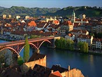
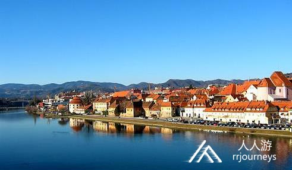
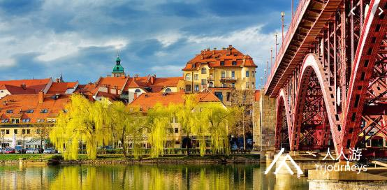

马里博尔
2020/1/12 16:25:28
详细介绍



鼠疫纪念雕塑 plague monumet
纪念牌位于马里博尔最中心的广场，用于纪念1680年结束的鼠疫。 原来的纪念碑建于1681，1743由本地雕塑家约瑟夫·斯特劳布重塑。 这个作品被认为是他最杰出的作品， 也是巴洛克式的艺术在斯洛文尼亚最好体现之一。 它完全是由白色的大理石所铸，以华丽的矩形为基座，中心矗立着科林斯柱，顶端是镀金的加冕十二星的圣母玛利亚站在月球上的雕像，围绕中心柱是为灾情祈祷的居民
Maribor Castle
马里博尔城堡
马里博尔城堡位于城市北部，由布兰迪斯伯爵(Grof Brandis)建于1655年，后逐渐扩增。城堡有华丽的18世纪洛可可风格楼梯，一部分区域现被用作马里博尔地区博物馆，堪称斯洛文尼亚最丰富的考古学和人种学收藏之一。
Three Ponds
三潭公园
三潭公园(Three Ponds)是在马里博尔市中心北部，这里集合了树林、池塘和草坪，是个奇妙的地方。从入口直走会通达一片的葡萄园，是一个受欢迎的慢跑路线。离市中心很近，树木很多，是个休闲的好地方。1941年二战期间，希特勒曾经从马里博尔老桥走过。
Studenci Footbridge
学生步行桥
学生步行桥位于老桥西面，可供行人与自行车通过，是马里博尔市内德劳河上唯一的非机动车桥梁，最早建于1903年，二战前后多次被毁，于1948年重建保存至今。
Tito's Bridge
铁托大桥
铁托大桥是连通马里博尔南北的重要交通枢纽，建于1963年，距离老桥不远。
Slovene National Theatre Maribor
斯洛文尼亚国家剧院
斯洛文尼亚国家剧院位于马里博尔大学、马里博尔大教堂旁，是一座巴洛克风格建筑，是马里博尔最知名的演出剧场，常年有戏剧、芭蕾舞剧、管弦乐等演出。
Military facility Kadetnica
卡德尼卡军事基地
卡德尼卡军事基地位于马里博尔南部，基地中设有军事博物馆，展示斯洛文尼亚国家独立战争历史与武器装备。
Regional Museum Maribor
马里博尔省博物馆
本馆位于古建于15世纪的马里博尔城堡内，介绍了本地区自石器时代开始的历史。
University of Maribor
马里博尔大学
马里博尔大学位于马里博尔大教堂西侧，是斯洛文尼亚的第二所大学，成立于1975年，在中东欧大学排名中进入前十五名。该大学与欧洲框架计划合作，国际研究项目不断增加。该院校交通方便、校园环境也十分优美。
Mariborsko Pohorje
波霍尔耶山
每年一月在波霍尔耶山的滑雪中心，都会举办高山滑雪世界杯(FIS Alpine Ski World Cup)的大回转比赛(Giant Slalom Race)。同时这里也有欧洲最长的灯光滑雪道。另外波霍尔耶山也是夏季踏青的好去处。所以每到夏冬两季，这里就是游客最多的地方。
Post Office
马里博尔邮局
马里博尔邮局位于大教堂的南侧，是一座精致的新文艺复兴风格建筑，建于1892-1899年。
Old Bridge
老桥
老桥是横跨德劳河上最知名的桥梁，建于1906-1912年间，是奥匈帝国建造的最美丽的桥梁之一。
Maribor Water Tower
马里博尔水塔
马里博尔水塔位于市中心德劳河岸边，是当地的必游景点之一。水塔最早是建于文艺复兴晚期的一座碉堡，守卫城墙的东南方，设有斯洛文尼亚最古老的酒窖，专门生产斯洛文尼亚及来自周边地区的红酒。酒窖的最高层是一个宽阔的高天花板圆形大厅，这里专门用于品酒，在中世纪也曾作为宴会厅。
Maribor Cathedral
马里博尔大教堂
马里博尔大教堂是一栋可追溯至12世纪的哥特式建筑，因纪念为耶稣施洗的先知而建，故也称圣若翰洗者大教堂。观建筑外形，可看到粗粝的石块和浅黄色的砂岩，显示其质朴天然的风格。教堂位于设有清凉喷泉的一片宁静绿洲中，与马里博尔大学隔林相望。
Maribor Town Hall
马里博尔市政厅
马里博尔市政厅位于城市主广场北侧，最早建于1515年，1563-1565年根据文艺复兴样式进行修建，虽在19世纪中叶又受到后古典主义风格影响，但最终还是恢复到了16世纪时的外观。1941年，希特勒来到这个城市，曾从市政厅的主阳台俯瞰广场，接见当地德国民众。
Hi?a Stare trte
老葡萄藤
老葡萄藤位于德劳河北岸边，是世界上最为古老的葡萄藤（2004年，吉尼斯世界纪录大全记录在册），被誉为斯洛文尼亚国宝之一。超过四个世纪以来它一直是一种名为黑色天鹅绒(?ametna ?rnina)的深红色葡萄酒的酿造原料。该葡萄藤枝蔓长达15米，时至今日，每当夏末的时候还会结出果实。用其果实酿造的葡萄酒，常被斯洛文尼亚作为国礼赠送国外政要和名流。
Main Square
马里博尔主广场
马里博尔主广场是当地的中心广场，与西侧卡林西亚路(Koro?ko cesto)呈漏斗状衔接。该广场1315年第一次在文献上被提到。自中世纪以来，直至20世纪中期，一直是热闹的贸易交易场所。如今通过这些道路、房屋地块，我们仍可以看到一个保存完好的古老城市中心样貌。
Botanic Garden University of Maribor
马里博尔大学植物园
马里博尔大学植物园位于马里博尔南面的Pivola地区，主要特色为波霍列山和斯洛文尼亚东北部的植物，也有来自亚洲、美洲的各类花草植物。
Ljudski Vrt Stadium
勒吉斯基.维特体育场
勒吉斯基.维特体育场建于1961年，可容纳12994名球迷，是斯洛文尼亚知名足球队马里博尔队（FC Maribor）的主场，由于马里博尔队经常参加欧冠联赛，为国家争得荣誉，这座球场已经成为城市历史、文化、体育的荣誉象征。
Salzbur?ki Dvor
萨尔斯伯斯基府邸
萨尔斯伯斯基府邸最早建于14世纪中期，1725年重建为一座巴洛克风格的建筑，是马里博尔最精美的巴洛克建筑之一，2006年起这里成为马里博尔游客中心所在地。
Vetrinjski Dvor
维特金斯基府邸
维特金斯基府邸是马里博尔市中心重要的历史建筑之一，最早建于14世纪，是一座晚巴洛克风格的建筑，1814年起这里是马里博尔市政厅的一部分。
Jewish Tower
犹太塔
犹太塔位于马里博尔水塔旁，是一座三层楼高的历史建筑，如今在塔内设置了一个照片画廊，每年约有十次大型的展览。
Fala Hydroelectric Power Plant Museum
法拉水电站博物馆
法拉水电站位于马里博尔西面，是在德劳河上最古老的水力发电厂，至今仍在运行，是斯洛文尼亚发展的活纪念碑，成立了博物馆，向游客展示水电站运作过程。
The Regional Archives
马里博尔地区档案馆
马里博尔地区档案馆收藏了自13世纪以来大量文献资料，包括文件、印刷品、绘画、照片、光学仪器、艺术家手稿等。
Betnava Mansion
贝特纳瓦庄园
贝特纳瓦庄园是马里博尔南郊的一座历史建筑，最早建于12世纪，1859年重修后保存至今。1962年，在庄园中设立了马里博尔教区博物馆，展示该地区800多年宗教历史文物。
Judgement Tower
审判塔
审判塔位于著名的老葡萄藤西面，是一栋圆锥形屋顶的建筑。审判塔是马里博尔中世纪城池的遗存之一，是城墙西南角的设防塔楼。原塔始建于14世纪初，于1540年彻底重建。审判庭内部呈文艺复兴式架构，并在19世纪扩增了四个楼层。
Maribor Synagogue
犹太教堂
马里博尔犹太教堂位于当地犹太社区中，建于14世纪，是欧洲地区第二古老的犹太教堂，也是斯洛文尼亚仅保存下来的两座犹太教堂之一。如今，这座教堂已被用作博物馆和文化展示场所，陈列着如犹太教的七烛台等宗教遗产。
Muzej narodne Osvoboditve Maribor
斯洛文尼亚民族解放纪念馆
本馆介绍了斯洛文尼亚人民自一战以来争取国家独立与民族解放的斗争。